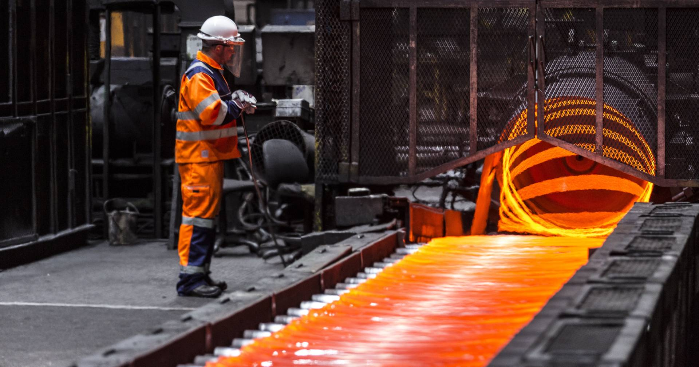

<div class="flex justify-center gap-4 w-full bg-neutral-100 mt-2 md:mt-12 pl-2 pr-2 md:pl-8 md:pr-8">

    <div class="flex flex-col xl:flex-row gap-4 w-full max-w-[1420px]">

        <div class="w-full">

            

            <div class="mt-5 text-4xl font-bold font-poppins">Billets</div>

            <div class="mt-6 leading-relaxed font-poppins text-base">

                <p class="w-full max-w-4xl">
                    Firmamız, modern tesislerinde en son teknolojilerle ürettiği çelik kütük (billet) ürünleriyle çelik endüstrisinin temel ihtiyaçlarını karşılamakta, 
                    sanayinin birçok alanına güvenilir, kaliteli ve sürdürülebilir yarı mamul çözümleri sunmaktadır. 
                    Sürekli döküm hatlarımızda uluslararası kalite standartlarına uygun olarak üretilen billetler; 
                    homojen iç yapısı, yüksek dayanımı ve üstün işlenebilirliğiyle öne çıkmaktadır. 
                    Gelişmiş üretim süreçlerimiz sayesinde her bir kütük, kimyasal bileşimde tutarlılık ve mekanik özelliklerde güvenilirlik sunar. 
                    Kare veya dikdörtgen kesitlerde üretilen billetlerimiz, farklı sektörlerin ihtiyaçlarına göre çeşitli boyutlarda tedarik edilerek son ürün üretiminde yüksek verimlilik sağlar.
                </p>

                <br>

                <span class="text-xl font-bold">Ürün Özellikleri</span>
                <ul class="list-disc list-inside mt-3 space-y-1">
                    <li>Homojen iç yapı ve yüksek mekanik dayanım ile güvenilir performans</li>
                    <li>Uluslararası standartlara uygun kimyasal kompozisyon</li>
                    <li>Sıcak haddeleme, dövme ve ekstrüzyon gibi üretim yöntemlerine tam uyumluluk</li>
                    <li>Farklı ebat ve boy seçenekleriyle esnek üretim imkânı</li>
                    <li>Müşteri talebine göre özel boy ve kesitlerde üretim avantajı</li>
                    <li>Yüksek yüzey kalitesi ve işleme kolaylığı</li>
                </ul>

                <br>

                <span class="text-xl font-bold">Kullanım Alanları</span>
                <ul class="list-disc list-inside mt-3 space-y-1">
                    <li>İnşaat sektöründe nervürlü inşaat demiri, profil ve yapı çeliği üretimi</li>
                    <li>Otomotiv ve makine sanayinde şaft, dişli, bağlantı elemanı ve özel parçaların imalatı</li>
                    <li>Boru, tel ve çubuk üretiminde verimli ara ürün</li>
                    <li>Endüstriyel donanım, ağır ekipman ve makine parçaları için sağlam altyapı malzemesi</li>
                    <li>Enerji, ulaşım ve altyapı sektörlerinde geniş kullanım alanı</li>
                </ul>

                <br>

                <span class="text-xl font-bold">Neden Bizim Billetlerimiz?</span>
                <ul class="list-disc list-inside mt-3 space-y-1">
                    <li>Modern üretim teknolojileri ve yüksek kalite kontrol standartları</li>
                    <li>Yüksek üretim verimliliği ile maliyet avantajı ve rekabetçi çözümler</li>
                    <li>Müşteriye özel ebat, kesit ve kimyasal kompozisyon seçenekleri</li>
                    <li>Sürekli ve güvenilir tedarik zinciri ile zamanında teslimat garantisi</li>
                    <li>Uluslararası sertifikalara sahip üretim süreçleriyle küresel güvenilirlik</li>
                    <li>Çevreye duyarlı ve sürdürülebilir çelik üretim anlayışı</li>
                </ul>

                <br>

                <p class="w-full max-w-4xl">
                    Firmamız, çelik kütük (billet) üretiminde kaliteyi, sürekliliği ve müşteri memnuniyetini her zaman ön planda tutarak sektöre güçlü ve kalıcı çözümler sunmaktadır. 
                    Üretim kapasitemiz, mühendislik gücümüz ve yenilikçi yaklaşımımız sayesinde hem yurtiçi hem de uluslararası pazarda güvenilir bir iş ortağı olmayı sürdürüyoruz.
                </p>
            </div>

        </div>

        <div class="w-full max-w-80">

            <div class="flex flex-col divide-y divide-neutral-200 border border-neutral-200">
                <a href="#slabs" class="flex justify-between items-center text-neutral-800 bg-neutral-100 hover:bg-neutral-200 duration-300 font-poppins font-bold pl-4 pr-2 h-14 w-full">
                    <span>Slabs</span>
                    <i class='bx bx-chevron-right bx-sm'></i>
                </a>
                <a href="#billets" class="flex justify-between items-center text-neutral-800 bg-neutral-100 hover:bg-neutral-200 buton-active duration-300 font-poppins font-bold pl-4 pr-2 h-14 w-full">
                    <span>Billets</span>
                    <i class='bx bx-chevron-right bx-sm'></i>
                </a>
                <a href="#tubes" class="flex justify-between items-center text-neutral-800 bg-neutral-100 hover:bg-neutral-200 duration-300 font-poppins font-bold pl-4 pr-2 h-14 w-full">
                    <span>Tubes</span>
                    <i class='bx bx-chevron-right bx-sm'></i>
                </a>
                <a href="#plates" class="flex justify-between items-center text-neutral-800 bg-neutral-100 hover:bg-neutral-200 duration-300 font-poppins font-bold pl-4 pr-2 h-14 w-full">
                    <span>Plates</span>
                    <i class='bx bx-chevron-right bx-sm'></i>
                </a>
            </div>

        </div>

    </div>

</div>
